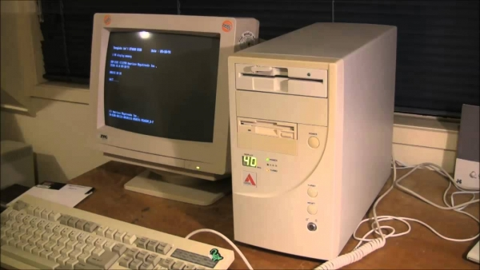

A internet é a estrutura global da rede, web é apenas um dos serviços que ocorre dentro da internet
1960-1980: A internet nasce como uma rede militar e de pesquisa.

1089-1999: World Wide Web surgiu em 1990, com a invenção do hipertexto, o HTML, criando o primeiro navegador, que então foi tornada na tecnologia de graça para todos.

2000-até hoje: Começa a expansão da web colaborativa, que foi marcado com o lançamento da wikipedia, facebook e youtube.
